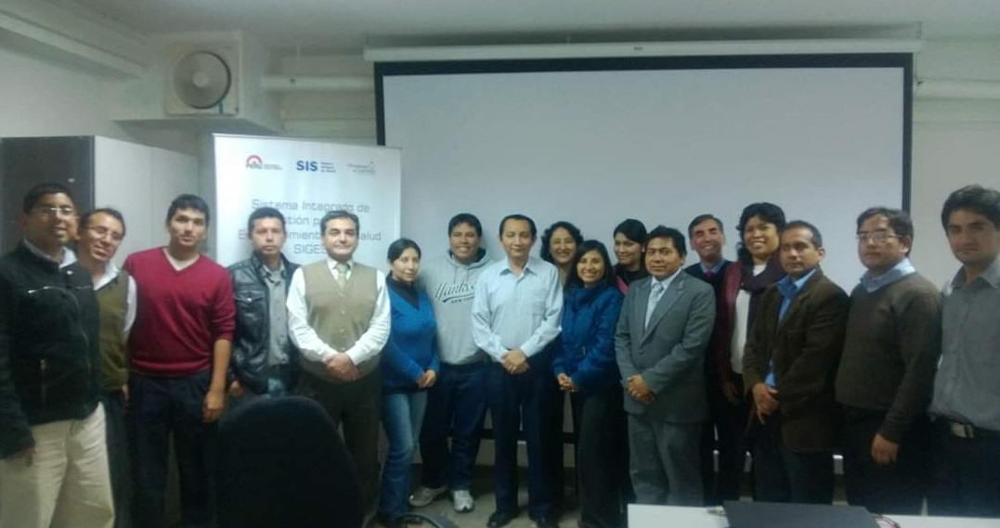

VLADIMIR JAUREGUI CANCHARI
Resumen
¡Hola! Soy Vladimir Jáuregui Canchari, Ingeniero de Sistemas y Cómputo, me desempeño como Analista de Sistemas, desde hace más de 15 años, participé en Proyectos de Desarrollo de Sistemas Integrados de Gestión en Hospitales MINSA del Sector Salud, así como en Proyectos de Implementación de Infraestructura Informática en Instituciones Públicas y Privadas (ONG). Estoy en constante capacitación y aprendizaje para innovar en el uso de las Tecnologías de Información.
Educación
Experiencia Laboral
Logros a alcanzar
Lugares Favoritos por Visitar
- Valle Sagrado de los Incas
- Machu Picchu
- Montaña de 07 Colores
- Líneas de Nazca
- PLayas de Máncora
- Ciudad de Iquitos
- Reserva Nacional de Tambopata
- Valle del Colca
- Islas de los Uros
- Parque Nacional del Huascarán